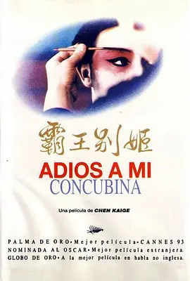
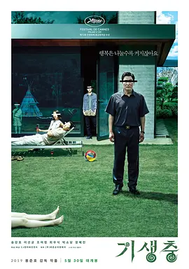

高分电影推荐：

|
《楚门的世界》“如果再也不能见到你，祝你早安，午安和晚安。”楚门标志性的笑容和口头禅让我心疼又欣慰。信息化时代，谁又不是楚门呢，活在没有隐私的世界，我们的一生都是一场巨大的真人秀。 【剧情简介】 影片讲述了楚门是一档热门真人肥皂剧的主人公，他身边的所有事情都是虚假的，他的亲人和朋友全都是演员，但他本人对此一无所知。最终楚门不惜一切代价走出了这个虚拟的世界。三十年的人生竟然是一场表演，细思极恐。17亿人见证他的出生，220多个国家的人看着他成长，这到底是一个怎样的世界？这显然是一部带有荒诞色彩的影片，可荒诞不就是这世界的真相之一吗？主人公名为Turman，意为真实的人，很有讽刺、启发的意味。 |

|
《死亡诗社》“我步入丛林，因为我希望生活有意义，我希望活得深刻，吸取生命中所有精华，把非生命的一切都击溃，以免当我生命终结，发现自己从没有活过。” 【剧情简介】 《死亡诗社》是一个古老的、关于守旧与创新、现实与浪漫、新人与老人两股势力二元较量的影片。威尔顿预备学院以其沉稳凝重的教学风格和较高的升学率闻名，作为其毕业班的学生，理想就是升入名校。新学期文学老师约翰·基汀（罗宾·威廉姆斯 饰）的到来如同一阵春风，一反传统名校的严肃刻板。基汀带学生们在校史楼内聆听死亡的声音，反思生的意义 ；让男生们在绿茵场上宣读自己的理想；鼓励学生站在课桌上，用新的视角俯瞰世界。老师自由发散式的哲学思维让学生内心产生强烈的共鸣，他们渐渐学会自己思考与求索，勇敢的追问人生的路途，甚至违反门禁，成立死亡诗社，在山洞里击节而歌！基汀教授、基汀老师、基汀队长，他的教育宛若春风化雨，润物无声的留在每个人心里… |
|  |
《霸王别姬》往事不要再提，人生已多风雨。纵然记忆抹不去，爱与恨都还在心里。真的要断了过去，让明天好好继续，你就不必再苦苦追问他的消息。爱情他是个难题，让人目眩神迷，忘了痛或许可以，忘了你却太不容易。我对你仍有爱意我对自己无能为力。 【剧情简介】 影片借一出《霸王别姬》的京戏，牵扯出三个人之间一段随时代风云变幻的爱恨情仇。段小楼（张丰毅）与程蝶衣（张国荣）是一对打小一起长大的师兄弟，两人一个演生，一个饰旦，一向配合天衣无缝，尤其一出《霸王别姬》，更是誉满京城，为此，两人约定合演一辈子《霸王别姬》。但两人对戏剧与人生关系的理解有本质不同，段小楼深知戏非人生，程蝶衣则是人戏不分。段小楼在认为该成家立业之时迎娶了名妓菊仙（巩俐），致使程蝶衣认定菊仙是可耻的第三者，使段小楼做了叛徒，自此，三人围绕一出《霸王别姬》生出的爱恨情仇战开始随着时代风云的变迁不断升级，终酿成悲剧。 |

|
《这个杀手不太冷》关于绿植、关于里昂、关于玛蒂尔达……他们错综交织着，如果漫溯这些纹理太过伤神，那共情的能力也就达到了，百感交集的、无处安放的、千回百转的……他们是海德格尔中的“此在”，他们在危机不安中盘根错节着，借由一盆绿植，惊讶一瞥，漫溯生命深处的纹理。 【剧情简介】 里昂（让·雷诺饰）是名孤独的职业杀手，受人雇佣。一天，邻居家小姑娘马蒂尔达（纳塔丽·波特曼饰)敲开他的房门，要求在他那里暂避杀身之祸。原来邻居家的主人是警方缉毒组的眼线，只因贪污了一小包毒品而遭恶警（加里·奥德曼饰）杀害全家的惩罚。马蒂尔达得到里昂的留救，幸免于难，并留在里昂那里。里昂教小女孩使枪，她教里昂法文，两人关系日趋亲密，相处融洽。女孩想着去报仇，反倒被抓，里昂及时赶到，将女孩救回。混杂着哀怨情仇的正邪之战渐次升级，更大的冲突在所难免…… |
|  |
《寄生虫》沐浴庭院里的阳光就能进化成人，呼吸暗室里的空气只会走肉如鬼。抱上贫穷的石头终生无法脱手，染上廉价的气味永世不能消除。蜷缩地下的臭虫，用药剂开窗替自己杀菌；位居高处的宿主，用金钱雇人给自己消毒。富人吸着穷人的血高升，穷人寄在富人的屋苟活，人鬼同处一室分享食物，虫兽寄生一体发育恩仇。 【剧情简介】 这是一部批判现实主义作品，直面当今世界中最为激化的矛盾——贫富分化和阶级固化。该片讲述了一家四口全是无业游民的爸爸金基泽成天游手好闲，直到积极向上的长子金基宇靠着伪造的文凭来到富豪朴社长的家应征家教，两个天差地别的家庭因而被卷入一连串的意外事件之中的故事 |

|
《末代皇帝》他痛哭流涕追阿毛、失魂落魄追婉容，但始终追不回那昔日辉煌的时代。他反抗太监偷窃文物、反抗日本傀儡操控，但终究反抗不了自己跌宕唏嘘的命运。他做了一辈子囚徒，在紫禁城在满洲国在抚顺管教所。终于买了张观光票，在赤色余晖中蹒跚进入太和殿。须臾一世，只有那皇座下藏着的蟋蟀，还认得他是帝王。 【剧情简介】 溥仪（尊龙饰）的一生在电影中娓娓道来。他从三岁起登基，年幼的眼光中只有大臣身上的一只蝈蝈，江山在他心中只是一个不明所以的名词。长大了，他以为可以变革，却被太监一把火烧了朝廷账本。他以为自己是大清江山的主人，却做了日本人的傀儡。解放后，他坐上了从苏联回来的火车，身边是押送监视他的解放军。他猜测自己难逃一死，便躲在狭小的卫生间里，割脉自杀。然而他没有死在火车上，命运的嘲笑还在等着他。文革的风风雨雨，在他身上留下了斑斑伤痕。 |

|
《熔炉》“奋起反抗不是为了改变这个世界，而是为了不让这个世界改变我们。”电影以真实故事改编，又一部极其精彩反映社会阴暗的题材。每个人物都刻画的立体丰满，情感同样控制得当，无力感充斥全身。电影完结，愤怒、无奈、唏嘘、悲伤各种情感如同“雾津”的浓雾一般，久久未能飘散，始终萦绕心头。 【剧情简介】 一部《熔炉》，让人看得心酸。它以真实故事为脚本，叙述了发生在一所聋哑障碍人学校里的性侵犯和性暴力惨象。“哪里有压迫，哪里就有反抗”，这群处于社会底层又饱受挫折的受害者，作为弱势群体既无力反抗，又无人关注，直到出现了一位有良知和正义感的老师，才给他们带来了生的希望。当社会日益法治化，人们对暴力的反抗就转移到法治轨道，法律越来越成为弱势群体的“救命稻草”，但在这场人权抗争中，电影把转型时期的权贵资本问题，法律面临的人性与制度的困境表现得淋漓尽致。 |